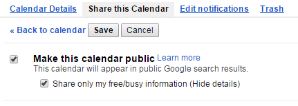
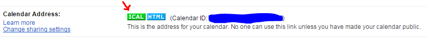

The calendar.conf file
All asterisk calendaring modules are configured through calendar.conf. Each calendar module can define its own set of required parameters in addition to the parameters available to all calendar types. An effort has been made to keep all options the same in all calendaring modules, but some options will diverge over time as features are added to each module.
An example calendar.conf might look like:
[calendar_joe] type = ical url = https://example.com/home/jdoe/Calendar user = jdoe secret = mysecret refresh = 15 timeframe = 600 autoreminder = 10 channel = SIP/joe context = calendar_event_notify extension = s waittime = 30
Module-independent settings
The settings related to calendar event notification are handled by the core calendaring API. These settings are:
- autoreminder - This allows the overriding of any alarms that may or may not be set for a calendar event. It is specified in minutes.
- refresh - How often to refresh the calendar data; specified in minutes.
- timeframe - How far into the future each calendar refresh should look. This is the amount of data that will be visible to queries from the dialplan. This setting should always be greater than or equal to the refresh setting or events may be missed. It is specified in minutes.
- channel - The channel that should be used for making the notification attempt.
- waittime - How long to wait, in seconds, for the channel to answer a notification attempt. There are two ways to specify how to handle a notification. One option is providing a context and extension, while the other is providing an application and the arguments to that application. One (and only one) of these options should be provided.
- context - The context of the extension to connect to the notification channel
- extension - The extension to connect to the notification. Note that the priority will always be 1.
- app - The dialplan application to execute upon the answer of a notification
- appdata - The data to pass to the notification dialplan application
Module-dependent settings
Connection-related options are specific to each module. Currently, all modules take a url, user, and secret for configuration and no other module-specific settings have been implemented. At this time, no support for HTTP redirects has been implemented, so it is important to specify the correct URL-paying attention to any trailing slashes that may be necessary.
Specific Examples
Google Calendar
Requirements:
- The res_calendar_icalendar.so module must be loaded and running.
- You must have a Google calendar!
- Google requires that you share the calendar publicly. However you can choose to only share busy/free information to limit exposure to details.
- Configure Asterisk to connect to the specific public calendar.
In this example we'll configure Asterisk to connect to your Google Calendar via the ical type calendar.
Sharing your Google calendar
For detailed instructions see Google's answer page.
We'll assume you are familiar with Google's interface and provide some brief instructions here.
Go to your Google calendar settings, navigate to a specific calendar and open the Share this Calendar tab.

Make the calendar public and choose save.
Get the Google calendar address
Go to the Calendar Details tab and find the button for getting the public ical address.

Configure Asterisk with Google Calendar details
This specific configuration isn't too different than the generic example. Your calendar address goes in the url field.
[gcal1] type = ical url = https://calendar.google.com/calendar/ical/example%40gmail.com/public/basic.ics user = example@gmail.com secret = a_very_secure_password refresh = 15 timeframe = 60
Once you have a configuration you can startup Asterisk or else reload the modules. After this you can check to see if the calendar is being read. Use the commands "calendar show calendars" and "calendar show calendar <calendar name>"
CentOSLab*CLI> calendar show calendars Calendar Type Status -------- ---- ------ gcal1 ical busy
CentOSLab*CLI> calendar show calendar gcal1 Name : gcal1 Notify channel : Notify context : Notify extension : Notify applicatio : Notify appdata : Refresh time : 15 Timeframe : 60 Autoreminder : 0 Events ------ Summary : Busy Description : Organizer : Location : Categories : Priority : 0 UID : 6b6ikcvq165i470lq5sdm7r1v4@google.com Start : 2015-11-25 05:40:00 PM -0600 End : 2015-11-25 06:10:00 PM -0600 Alarm :
The output should reflect your calendar settings and if it is reading from the calendar server you should see events that are present (on your calendar) within the configured Timeframe. If you don't see any events then go to your Google calendar and create an event within the timeframe. Save that event, then wait at least the Refresh time before checking the commands again to see if the event shows up.
{kind=link}
{kind=link}
{kind=link}